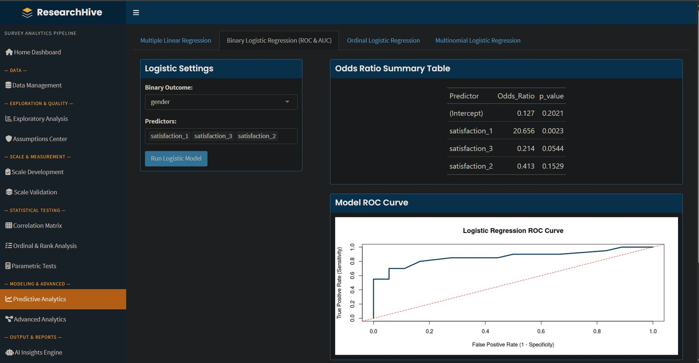

ResearchHive OS
Survey Analytics & Research IntelligenceResearchHive OS
An end-to-end survey analytics pipeline that takes researchers and organisations from raw questionnaire data to defensible, reportable results.
Capabilities
- Data management, quality checks and exploratory analysis
- Assumption checks before testing
- Scale development and validation
- Correlation, ordinal and rank, and parametric tests
- Predictive models: linear, binary (ROC and AUC), ordinal and multinomial logistic regression
- Automated insights and reporting
Built for survey researchers, M&E teams, universities and NGOs.
Request a demo or licence